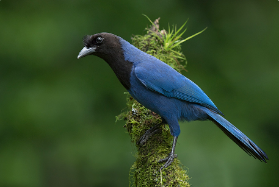

Uma ave muito esperta
Os corvídeos estão entre as aves mais inteligentes do mundo. A Gralha-azul tem boa memória para lembrar onde escondeu o alimento e se comunica por meio de uma grande variedade de chamados, com sons altos que ecoam pela mata.
Tudo sobre a ave que simboliza o estado do Paraná.
A Gralha-azul (nome científico Cyanocorax caeruleus) é uma ave da família dos corvídeos, a mesma dos corvos e das pegas. Ela é facilmente reconhecida pela cabeça preta com uma pequena crista e pelo corpo de um azul intenso, que brilha quando recebe a luz do sol.
Ela vive principalmente na Mata Atlântica do sul do Brasil e é a ave-símbolo do estado do Paraná. Costuma andar em bandos barulhentos e muito sociais, e sua inteligência chama a atenção de quem estuda o comportamento das aves.

| Nome científico | Cyanocorax caeruleus |
|---|---|
| Família | Corvidae (corvídeos) |
| Tamanho | Cerca de 40 cm |
| Símbolo de | Estado do Paraná |
A Gralha-azul tem um papel fundamental na natureza: ela ajuda a espalhar as sementes da araucária, o famoso pinhão. A ave guarda pinhões enterrando-os no solo para comer depois, mas nem sempre se lembra de todos os esconderijos.
Os pinhões esquecidos acabam germinando e dão origem a novas árvores. Ou seja, a ave "planta" florestas sem perceber! Essa relação é um ótimo exemplo de como os seres vivos dependem uns dos outros.
Os corvídeos estão entre as aves mais inteligentes do mundo. A Gralha-azul tem boa memória para lembrar onde escondeu o alimento e se comunica por meio de uma grande variedade de chamados, com sons altos que ecoam pela mata.
Por ser o símbolo do estado, a ave aparece em obras de arte, em nomes de lugares, em produtos locais e até em torcidas e eventos esportivos. Quem mora no Paraná cresce vendo a gralha por toda parte.
A Floresta com Araucária já perdeu grande parte de sua área original por causa do desmatamento. Como a Gralha-azul depende dessas árvores para viver, proteger a floresta também é proteger a ave. Preservar as matas, evitar o corte de araucárias e respeitar a fauna silvestre são atitudes que fazem diferença.
Quer saber mais? Leia o artigo sobre a espécie na Wikipédia: Gralha-azul na Wikipédia 🔗 .
E conheça também a árvore que depende dessa ave: